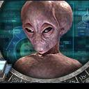

Forums galactiques > Taverne galactique : lieu de discussion informel > jeu HRP 2
Pages : 1 2 ... 21 22 23 ... 25 26
| Baby_comdant Réputation à la taverne : 54  05/02 ETU 19:54 | Score : 0 Détails Dans une cafétéria gérée par un alcoolique notoire qui ne pouvait dormir sans taper des pieds, un molusque mangeait un monton, et grignotai, tranquilement dans son coin,une salade. Lorsque un escargot arriva, il lui dit :salut, passes moi le sel !
-Non -Pourquoi -J'ai faim -Prend ca dans ta figure et la, l'escargot sort un bazooka a tomates et tir dans le nez du molusque (?!) Celui ci riposte et arrache le bazooka. Il assome l'esgargot d'un revers de bazzoka splendide. Surgit alors un gendarme nain soul déguisé en canadien qui dit: vous l'avez foutu ou le sel ? -dans ton porte-feuille de combat ! -tu te fous de ma geule ? -oui Le gendarme alors sortit de sa fausse poche sur le coté de son pantalon en peau de crocodile méxicain un biberon remplit delailait qui peut exploser si il y a de la nitro dedans et il y en avait boum le mouton, qui en avait profité pour filer,se cassa une patte en fracture irreparrablE. Ce mouton n'avait jamais eu de chance dans sa vie. Il avait tout d'abord vécu à Pauvrecity (ville qui est introuvable sur aucune cartes!) Et après, le mouton, dans son adolescence fait un bond sur le coté et tombe par le fenêtre, ce qui entraîne sa mort Un génie arriva et dit: -C'est ou moscou -a l'est -C'est où l'est ? -Dans l'Asie -C'est ou ce trou perdu -Au pôle nord ... -Mais c'est ou ? -qu'est ce que ca peu te faire le génié s'énerva,il lanca un sort qui... detruisit l'asie entiere -Pourquoi ? s'écria le tavernier qui avait une taverne tout salopée par ces combats de sorciers bourés -Pourquoi pas s'écria un personage loup phoque (mi loup, mi phoque, et re mi loup derriere) au nez rouge au yeux jaunes et cheveux verts coiffé d'une casquette 59fifty bien trop grande pour son crâne atrophié _mais pourquoi pourquoi pas??? - mais parce-que !!!Bon, va voir ailleur, rien ne te retient,j'espere parce que l'escargot est vraiment gonflant avec ces blagues suisses Et un suisse entra. -Tavernier !!! un mouton bien salé!!! _on ne sert plus de mouton!! | ||
| Madame Démocratie Réputation à la taverne : 47  05/02 ETU 22:04 | Score : 0 Détails Dans une cafétéria gérée par un alcoolique notoire qui ne pouvait dormir sans taper des pieds, un molusque mangeait un monton, et grignotai, tranquilement dans son coin,une salade. Lorsque un escargot arriva, il lui dit :salut, passes moi le sel !
-Non -Pourquoi -J'ai faim -Prend ca dans ta figure et la, l'escargot sort un bazooka a tomates et tir dans le nez du molusque (?!) Celui ci riposte et arrache le bazooka. Il assome l'esgargot d'un revers de bazzoka splendide. Surgit alors un gendarme nain soul déguisé en canadien qui dit: vous l'avez foutu ou le sel ? -dans ton porte-feuille de combat ! -tu te fous de ma geule ? -oui Le gendarme alors sortit de sa fausse poche sur le coté de son pantalon en peau de crocodile méxicain un biberon remplit delailait qui peut exploser si il y a de la nitro dedans et il y en avait boum le mouton, qui en avait profité pour filer,se cassa une patte en fracture irreparrablE. Ce mouton n'avait jamais eu de chance dans sa vie. Il avait tout d'abord vécu à Pauvrecity (ville qui est introuvable sur aucune cartes!) Et après, le mouton, dans son adolescence fait un bond sur le coté et tombe par le fenêtre, ce qui entraîne sa mort Un génie arriva et dit: -C'est ou moscou -a l'est -C'est où l'est ? -Dans l'Asie -C'est ou ce trou perdu -Au pôle nord ... -Mais c'est ou ? -qu'est ce que ca peu te faire le génié s'énerva,il lanca un sort qui... detruisit l'asie entiere -Pourquoi ? s'écria le tavernier qui avait une taverne tout salopée par ces combats de sorciers bourés -Pourquoi pas s'écria un personage loup phoque (mi loup, mi phoque, et re mi loup derriere) au nez rouge au yeux jaunes et cheveux verts coiffé d'une casquette 59fifty bien trop grande pour son crâne atrophié _mais pourquoi pourquoi pas??? - mais parce-que !!!Bon, va voir ailleur, rien ne te retient,j'espere parce que l'escargot est vraiment gonflant avec ces blagues suisses Et un suisse entra. -Tavernier !!! un mouton bien salé!!! _on ne sert plus de mouton!! Le suisse alors | ||
| Alfa3 Réputation à la taverne : 2  05/02 ETU 22:08 | Score : 0 Détails Dans une cafétéria gérée par un alcoolique notoire qui ne pouvait dormir sans taper des pieds, un molusque mangeait un monton, et grignotai, tranquilement dans son coin,une salade. Lorsque un escargot arriva, il lui dit :salut, passes moi le sel !
-Non -Pourquoi -J'ai faim -Prend ca dans ta figure et la, l'escargot sort un bazooka a tomates et tir dans le nez du molusque (?!) Celui ci riposte et arrache le bazooka. Il assome l'esgargot d'un revers de bazzoka splendide. Surgit alors un gendarme nain soul déguisé en canadien qui dit: vous l'avez foutu ou le sel ? -dans ton porte-feuille de combat ! -tu te fous de ma geule ? -oui Le gendarme alors sortit de sa fausse poche sur le coté de son pantalon en peau de crocodile méxicain un biberon remplit delailait qui peut exploser si il y a de la nitro dedans et il y en avait boum le mouton, qui en avait profité pour filer,se cassa une patte en fracture irreparrablE. Ce mouton n'avait jamais eu de chance dans sa vie. Il avait tout d'abord vécu à Pauvrecity (ville qui est introuvable sur aucune cartes!) Et après, le mouton, dans son adolescence fait un bond sur le coté et tombe par le fenêtre, ce qui entraîne sa mort Un génie arriva et dit: -C'est ou moscou -a l'est -C'est où l'est ? -Dans l'Asie -C'est ou ce trou perdu -Au pôle nord ... -Mais c'est ou ? -qu'est ce que ca peu te faire le génié s'énerva,il lanca un sort qui... detruisit l'asie entiere -Pourquoi ? s'écria le tavernier qui avait une taverne tout salopée par ces combats de sorciers bourés -Pourquoi pas s'écria un personage loup phoque (mi loup, mi phoque, et re mi loup derriere) au nez rouge au yeux jaunes et cheveux verts coiffé d'une casquette 59fifty bien trop grande pour son crâne atrophié _mais pourquoi pourquoi pas??? - mais parce-que !!!Bon, va voir ailleur, rien ne te retient,j'espere parce que l'escargot est vraiment gonflant avec ces blagues suisses Et un suisse entra. -Tavernier !!! un mouton bien salé!!! _on ne sert plus de mouton!! Le suisse alors se retira | ||
| Groochie Réputation à la taverne : 709  05/02 ETU 22:09 | Score : 2 Détails Dans une cafétéria gérée par un alcoolique notoire qui ne pouvait dormir sans taper des pieds, un molusque mangeait un monton, et grignotai, tranquilement dans son coin,une salade. Lorsque un escargot arriva, il lui dit :salut, passes moi le sel !
-Non -Pourquoi -J'ai faim -Prend ca dans ta figure et la, l'escargot sort un bazooka a tomates et tir dans le nez du molusque (?!) Celui ci riposte et arrache le bazooka. Il assome l'esgargot d'un revers de bazzoka splendide. Surgit alors un gendarme nain soul déguisé en canadien qui dit: vous l'avez foutu ou le sel ? -dans ton porte-feuille de combat ! -tu te fous de ma geule ? -oui Le gendarme alors sortit de sa fausse poche sur le coté de son pantalon en peau de crocodile méxicain un biberon remplit delailait qui peut exploser si il y a de la nitro dedans et il y en avait boum le mouton, qui en avait profité pour filer,se cassa une patte en fracture irreparrablE. Ce mouton n'avait jamais eu de chance dans sa vie. Il avait tout d'abord vécu à Pauvrecity (ville qui est introuvable sur aucune cartes!) Et après, le mouton, dans son adolescence fait un bond sur le coté et tombe par le fenêtre, ce qui entraîne sa mort Un génie arriva et dit: -C'est ou moscou -a l'est -C'est où l'est ? -Dans l'Asie -C'est ou ce trou perdu -Au pôle nord ... -Mais c'est ou ? -qu'est ce que ca peu te faire le génié s'énerva,il lanca un sort qui... detruisit l'asie entiere -Pourquoi ? s'écria le tavernier qui avait une taverne tout salopée par ces combats de sorciers bourés -Pourquoi pas s'écria un personage loup phoque (mi loup, mi phoque, et re mi loup derriere) au nez rouge au yeux jaunes et cheveux verts coiffé d'une casquette 59fifty bien trop grande pour son crâne atrophié _mais pourquoi pourquoi pas??? - mais parce-que !!!Bon, va voir ailleur, rien ne te retient,j'espere parce que l'escargot est vraiment gonflant avec ces blagues suisses Et un suisse entra. -Tavernier !!! un mouton bien salé!!! _on ne sert plus de mouton!! Le suisse alors, se retira un oeil et le mangeât | ||
| Baby_comdant Réputation à la taverne : 54 06/02 ETU 20:47 | Score : 0 Détails Dans une cafétéria gérée par un alcoolique notoire qui ne pouvait dormir sans taper des pieds, un molusque mangeait un monton, et grignotai, tranquilement dans son coin,une salade. Lorsque un escargot arriva, il lui dit :salut, passes moi le sel !
-Non -Pourquoi -J'ai faim -Prend ca dans ta figure et la, l'escargot sort un bazooka a tomates et tir dans le nez du molusque (?!) Celui ci riposte et arrache le bazooka. Il assome l'esgargot d'un revers de bazzoka splendide. Surgit alors un gendarme nain soul déguisé en canadien qui dit: vous l'avez foutu ou le sel ? -dans ton porte-feuille de combat ! -tu te fous de ma geule ? -oui Le gendarme alors sortit de sa fausse poche sur le coté de son pantalon en peau de crocodile méxicain un biberon remplit delailait qui peut exploser si il y a de la nitro dedans et il y en avait boum le mouton, qui en avait profité pour filer,se cassa une patte en fracture irreparrablE. Ce mouton n'avait jamais eu de chance dans sa vie. Il avait tout d'abord vécu à Pauvrecity (ville qui est introuvable sur aucune cartes!) Et après, le mouton, dans son adolescence fait un bond sur le coté et tombe par le fenêtre, ce qui entraîne sa mort Un génie arriva et dit: -C'est ou moscou -a l'est -C'est où l'est ? -Dans l'Asie -C'est ou ce trou perdu -Au pôle nord ... -Mais c'est ou ? -qu'est ce que ca peu te faire le génié s'énerva,il lanca un sort qui... detruisit l'asie entiere -Pourquoi ? s'écria le tavernier qui avait une taverne tout salopée par ces combats de sorciers bourés -Pourquoi pas s'écria un personage loup phoque (mi loup, mi phoque, et re mi loup derriere) au nez rouge au yeux jaunes et cheveux verts coiffé d'une casquette 59fifty bien trop grande pour son crâne atrophié _mais pourquoi pourquoi pas??? - mais parce-que !!!Bon, va voir ailleur, rien ne te retient,j'espere parce que l'escargot est vraiment gonflant avec ces blagues suisses Et un suisse entra. -Tavernier !!! un mouton bien salé!!! _on ne sert plus de mouton!! Le suisse alors, se retira un oeil et le mangeât _mmmmm, j'adore sa!!! | ||
| Madame Démocratie Réputation à la taverne : 47 11/02 ETU 13:17 | Score : 0 Détails Dans une cafétéria gérée par un alcoolique notoire qui ne pouvait dormir sans taper des pieds, un molusque mangeait un monton, et grignotai, tranquilement dans son coin,une salade. Lorsque un escargot arriva, il lui dit :salut, passes moi le sel !
-Non -Pourquoi -J'ai faim -Prend ca dans ta figure et la, l'escargot sort un bazooka a tomates et tir dans le nez du molusque (?!) Celui ci riposte et arrache le bazooka. Il assome l'esgargot d'un revers de bazzoka splendide. Surgit alors un gendarme nain soul déguisé en canadien qui dit: vous l'avez foutu ou le sel ? -dans ton porte-feuille de combat ! -tu te fous de ma geule ? -oui Le gendarme alors sortit de sa fausse poche sur le coté de son pantalon en peau de crocodile méxicain un biberon remplit delailait qui peut exploser si il y a de la nitro dedans et il y en avait boum le mouton, qui en avait profité pour filer,se cassa une patte en fracture irreparrablE. Ce mouton n'avait jamais eu de chance dans sa vie. Il avait tout d'abord vécu à Pauvrecity (ville qui est introuvable sur aucune cartes!) Et après, le mouton, dans son adolescence fait un bond sur le coté et tombe par le fenêtre, ce qui entraîne sa mort Un génie arriva et dit: -C'est ou moscou -a l'est -C'est où l'est ? -Dans l'Asie -C'est ou ce trou perdu -Au pôle nord ... -Mais c'est ou ? -qu'est ce que ca peu te faire le génié s'énerva,il lanca un sort qui... detruisit l'asie entiere -Pourquoi ? s'écria le tavernier qui avait une taverne tout salopée par ces combats de sorciers bourés -Pourquoi pas s'écria un personage loup phoque (mi loup, mi phoque, et re mi loup derriere) au nez rouge au yeux jaunes et cheveux verts coiffé d'une casquette 59fifty bien trop grande pour son crâne atrophié _mais pourquoi pourquoi pas??? - mais parce-que !!!Bon, va voir ailleur, rien ne te retient,j'espere parce que l'escargot est vraiment gonflant avec ces blagues suisses Et un suisse entra. -Tavernier !!! un mouton bien salé!!! _on ne sert plus de mouton!! Le suisse alors, se retira un oeil et le mangeât _mmmmm, j'adore sa!!! Alors le tavernier | ||
| N'Tyrr Réputation à la taverne : 299  11/02 ETU 13:51 | Score : 0 Détails Dans une cafétéria gérée par un alcoolique notoire qui ne pouvait dormir sans taper des pieds, un molusque mangeait un monton, et grignotai, tranquilement dans son coin,une salade. Lorsque un escargot arriva, il lui dit :salut, passes moi le sel !
-Non -Pourquoi -J'ai faim -Prend ca dans ta figure et la, l'escargot sort un bazooka a tomates et tir dans le nez du molusque (?!) Celui ci riposte et arrache le bazooka. Il assome l'esgargot d'un revers de bazzoka splendide. Surgit alors un gendarme nain soul déguisé en canadien qui dit: vous l'avez foutu ou le sel ? -dans ton porte-feuille de combat ! -tu te fous de ma geule ? -oui Le gendarme alors sortit de sa fausse poche sur le coté de son pantalon en peau de crocodile méxicain un biberon remplit delailait qui peut exploser si il y a de la nitro dedans et il y en avait boum le mouton, qui en avait profité pour filer,se cassa une patte en fracture irreparrablE. Ce mouton n'avait jamais eu de chance dans sa vie. Il avait tout d'abord vécu à Pauvrecity (ville qui est introuvable sur aucune cartes!) Et après, le mouton, dans son adolescence fait un bond sur le coté et tombe par le fenêtre, ce qui entraîne sa mort Un génie arriva et dit: -C'est ou moscou -a l'est -C'est où l'est ? -Dans l'Asie -C'est ou ce trou perdu -Au pôle nord ... -Mais c'est ou ? -qu'est ce que ca peu te faire le génié s'énerva,il lanca un sort qui... detruisit l'asie entiere -Pourquoi ? s'écria le tavernier qui avait une taverne tout salopée par ces combats de sorciers bourés -Pourquoi pas s'écria un personage loup phoque (mi loup, mi phoque, et re mi loup derriere) au nez rouge au yeux jaunes et cheveux verts coiffé d'une casquette 59fifty bien trop grande pour son crâne atrophié _mais pourquoi pourquoi pas??? - mais parce-que !!!Bon, va voir ailleur, rien ne te retient,j'espere parce que l'escargot est vraiment gonflant avec ces blagues suisses Et un suisse entra. -Tavernier !!! un mouton bien salé!!! _on ne sert plus de mouton!! Le suisse alors, se retira un oeil et le mangeât _mmmmm, j'adore sa!!! Alors le tavernier persuadé d'avoir | ||
| tigre rouge Réputation à la taverne : 51  11/02 ETU 14:19 | Score : 0 Détails Dans une cafétéria gérée par un alcoolique notoire qui ne pouvait dormir sans taper des pieds, un molusque mangeait un monton, et grignotai, tranquilement dans son coin,une salade. Lorsque un escargot arriva, il lui dit :salut, passes moi le sel !
-Non -Pourquoi -J'ai faim -Prend ca dans ta figure et la, l'escargot sort un bazooka a tomates et tir dans le nez du molusque (?!) Celui ci riposte et arrache le bazooka. Il assome l'esgargot d'un revers de bazzoka splendide. Surgit alors un gendarme nain soul déguisé en canadien qui dit: vous l'avez foutu ou le sel ? -dans ton porte-feuille de combat ! -tu te fous de ma geule ? -oui Le gendarme alors sortit de sa fausse poche sur le coté de son pantalon en peau de crocodile méxicain un biberon remplit delailait qui peut exploser si il y a de la nitro dedans et il y en avait boum le mouton, qui en avait profité pour filer,se cassa une patte en fracture irreparrablE. Ce mouton n'avait jamais eu de chance dans sa vie. Il avait tout d'abord vécu à Pauvrecity (ville qui est introuvable sur aucune cartes!) Et après, le mouton, dans son adolescence fait un bond sur le coté et tombe par le fenêtre, ce qui entraîne sa mort Un génie arriva et dit: -C'est ou moscou -a l'est -C'est où l'est ? -Dans l'Asie -C'est ou ce trou perdu -Au pôle nord ... -Mais c'est ou ? -qu'est ce que ca peu te faire le génié s'énerva,il lanca un sort qui... detruisit l'asie entiere -Pourquoi ? s'écria le tavernier qui avait une taverne tout salopée par ces combats de sorciers bourés -Pourquoi pas s'écria un personage loup phoque (mi loup, mi phoque, et re mi loup derriere) au nez rouge au yeux jaunes et cheveux verts coiffé d'une casquette 59fifty bien trop grande pour son crâne atrophié _mais pourquoi pourquoi pas??? - mais parce-que !!!Bon, va voir ailleur, rien ne te retient,j'espere parce que l'escargot est vraiment gonflant avec ces blagues suisses Et un suisse entra. -Tavernier !!! un mouton bien salé!!! _on ne sert plus de mouton!! Le suisse alors, se retira un oeil et le mangeât _mmmmm, j'adore sa!!! Alors le tavernier persuadé d'avoir en face de lui | ||
| Baby_comdant Réputation à la taverne : 54 11/02 ETU 14:39 | Score : 0 Détails Dans une cafétéria gérée par un alcoolique notoire qui ne pouvait dormir sans taper des pieds, un molusque mangeait un monton, et grignotai, tranquilement dans son coin,une salade. Lorsque un escargot arriva, il lui dit :salut, passes moi le sel !
-Non -Pourquoi -J'ai faim -Prend ca dans ta figure et la, l'escargot sort un bazooka a tomates et tir dans le nez du molusque (?!) Celui ci riposte et arrache le bazooka. Il assome l'esgargot d'un revers de bazzoka splendide. Surgit alors un gendarme nain soul déguisé en canadien qui dit: vous l'avez foutu ou le sel ? -dans ton porte-feuille de combat ! -tu te fous de ma geule ? -oui Le gendarme alors sortit de sa fausse poche sur le coté de son pantalon en peau de crocodile méxicain un biberon remplit delailait qui peut exploser si il y a de la nitro dedans et il y en avait boum le mouton, qui en avait profité pour filer,se cassa une patte en fracture irreparrablE. Ce mouton n'avait jamais eu de chance dans sa vie. Il avait tout d'abord vécu à Pauvrecity (ville qui est introuvable sur aucune cartes!) Et après, le mouton, dans son adolescence fait un bond sur le coté et tombe par le fenêtre, ce qui entraîne sa mort Un génie arriva et dit: -C'est ou moscou -a l'est -C'est où l'est ? -Dans l'Asie -C'est ou ce trou perdu -Au pôle nord ... -Mais c'est ou ? -qu'est ce que ca peu te faire le génié s'énerva,il lanca un sort qui... detruisit l'asie entiere -Pourquoi ? s'écria le tavernier qui avait une taverne tout salopée par ces combats de sorciers bourés -Pourquoi pas s'écria un personage loup phoque (mi loup, mi phoque, et re mi loup derriere) au nez rouge au yeux jaunes et cheveux verts coiffé d'une casquette 59fifty bien trop grande pour son crâne atrophié _mais pourquoi pourquoi pas??? - mais parce-que !!!Bon, va voir ailleur, rien ne te retient,j'espere parce que l'escargot est vraiment gonflant avec ces blagues suisses Et un suisse entra. -Tavernier !!! un mouton bien salé!!! _on ne sert plus de mouton!! Le suisse alors, se retira un oeil et le mangeât _mmmmm, j'adore sa!!! Alors le tavernier persuadé d'avoir en face de lui un parfait cretin | ||
| IWOK Réputation à la taverne : 187  12/02 ETU 18:49 | Score : 0 Détails Dans une cafétéria gérée par un alcoolique notoire qui ne pouvait dormir sans taper des pieds, un molusque mangeait un monton, et grignotai, tranquilement dans son coin,une salade. Lorsque un escargot arriva, il lui dit :salut, passes moi le sel !
-Non -Pourquoi -J'ai faim -Prend ca dans ta figure et la, l'escargot sort un bazooka a tomates et tir dans le nez du molusque (?!) Celui ci riposte et arrache le bazooka. Il assome l'esgargot d'un revers de bazzoka splendide. Surgit alors un gendarme nain soul déguisé en canadien qui dit: vous l'avez foutu ou le sel ? -dans ton porte-feuille de combat ! -tu te fous de ma geule ? -oui Le gendarme alors sortit de sa fausse poche sur le coté de son pantalon en peau de crocodile méxicain un biberon remplit delailait qui peut exploser si il y a de la nitro dedans et il y en avait boum le mouton, qui en avait profité pour filer,se cassa une patte en fracture irreparrablE. Ce mouton n'avait jamais eu de chance dans sa vie. Il avait tout d'abord vécu à Pauvrecity (ville qui est introuvable sur aucune cartes!) Et après, le mouton, dans son adolescence fait un bond sur le coté et tombe par le fenêtre, ce qui entraîne sa mort Un génie arriva et dit: -C'est ou moscou -a l'est -C'est où l'est ? -Dans l'Asie -C'est ou ce trou perdu -Au pôle nord ... -Mais c'est ou ? -qu'est ce que ca peu te faire le génié s'énerva,il lanca un sort qui... detruisit l'asie entiere -Pourquoi ? s'écria le tavernier qui avait une taverne tout salopée par ces combats de sorciers bourés -Pourquoi pas s'écria un personage loup phoque (mi loup, mi phoque, et re mi loup derriere) au nez rouge au yeux jaunes et cheveux verts coiffé d'une casquette 59fifty bien trop grande pour son crâne atrophié _mais pourquoi pourquoi pas??? - mais parce-que !!!Bon, va voir ailleur, rien ne te retient,j'espere parce que l'escargot est vraiment gonflant avec ces blagues suisses Et un suisse entra. -Tavernier !!! un mouton bien salé!!! _on ne sert plus de mouton!! Le suisse alors, se retira un oeil et le mangeât _mmmmm, j'adore sa!!! Alors le tavernier persuadé d'avoir en face de lui un parfait cretin se mit à chanter une chanson en Polonais avec un accent qui sonné Hongrois: " Jfudfj, dsuij, etl djs..." Quand soudain surgit un troll paraplégique qui cria | ||
| Groochie Réputation à la taverne : 709 12/02 ETU 20:41 | Score : 0 Détails Dans une cafétéria gérée par un alcoolique notoire qui ne pouvait dormir sans taper des pieds, un molusque mangeait un monton, et grignotai, tranquilement dans son coin,une salade. Lorsque un escargot arriva, il lui dit :salut, passes moi le sel !
-Non -Pourquoi -J'ai faim -Prend ca dans ta figure et la, l'escargot sort un bazooka a tomates et tir dans le nez du molusque (?!) Celui ci riposte et arrache le bazooka. Il assome l'esgargot d'un revers de bazzoka splendide. Surgit alors un gendarme nain soul déguisé en canadien qui dit: vous l'avez foutu ou le sel ? -dans ton porte-feuille de combat ! -tu te fous de ma geule ? -oui Le gendarme alors sortit de sa fausse poche sur le coté de son pantalon en peau de crocodile méxicain un biberon remplit delailait qui peut exploser si il y a de la nitro dedans et il y en avait boum le mouton, qui en avait profité pour filer,se cassa une patte en fracture irreparrablE. Ce mouton n'avait jamais eu de chance dans sa vie. Il avait tout d'abord vécu à Pauvrecity (ville qui est introuvable sur aucune cartes!) Et après, le mouton, dans son adolescence fait un bond sur le coté et tombe par le fenêtre, ce qui entraîne sa mort Un génie arriva et dit: -C'est ou moscou -a l'est -C'est où l'est ? -Dans l'Asie -C'est ou ce trou perdu -Au pôle nord ... -Mais c'est ou ? -qu'est ce que ca peu te faire le génié s'énerva,il lanca un sort qui... detruisit l'asie entiere -Pourquoi ? s'écria le tavernier qui avait une taverne tout salopée par ces combats de sorciers bourés -Pourquoi pas s'écria un personage loup phoque (mi loup, mi phoque, et re mi loup derriere) au nez rouge au yeux jaunes et cheveux verts coiffé d'une casquette 59fifty bien trop grande pour son crâne atrophié _mais pourquoi pourquoi pas??? - mais parce-que !!!Bon, va voir ailleur, rien ne te retient,j'espere parce que l'escargot est vraiment gonflant avec ces blagues suisses Et un suisse entra. -Tavernier !!! un mouton bien salé!!! _on ne sert plus de mouton!! Le suisse alors, se retira un oeil et le mangeât _mmmmm, j'adore sa!!! Alors le tavernier persuadé d'avoir en face de lui un parfait cretin se mit à chanter une chanson en Polonais avec un accent qui sonné Hongrois: " Jfudfj, dsuij, etl djs..." Quand soudain surgit un troll paraplégique qui cria: "Un café!!!! Tres Sérer!!! Et a mort les patrons" | ||
| IWOK Réputation à la taverne : 187 12/02 ETU 21:34 | Score : 1 Détails Dans une cafétéria gérée par un alcoolique notoire qui ne pouvait dormir sans taper des pieds, un molusque mangeait un monton, et grignotai, tranquilement dans son coin,une salade. Lorsque un escargot arriva, il lui dit :salut, passes moi le sel !
-Non -Pourquoi -J'ai faim -Prend ca dans ta figure et la, l'escargot sort un bazooka a tomates et tir dans le nez du molusque (?!) Celui ci riposte et arrache le bazooka. Il assome l'esgargot d'un revers de bazzoka splendide. Surgit alors un gendarme nain soul déguisé en canadien qui dit: vous l'avez foutu ou le sel ? -dans ton porte-feuille de combat ! -tu te fous de ma geule ? -oui Le gendarme alors sortit de sa fausse poche sur le coté de son pantalon en peau de crocodile méxicain un biberon remplit delailait qui peut exploser si il y a de la nitro dedans et il y en avait boum le mouton, qui en avait profité pour filer,se cassa une patte en fracture irreparrablE. Ce mouton n'avait jamais eu de chance dans sa vie. Il avait tout d'abord vécu à Pauvrecity (ville qui est introuvable sur aucune cartes!) Et après, le mouton, dans son adolescence fait un bond sur le coté et tombe par le fenêtre, ce qui entraîne sa mort Un génie arriva et dit: -C'est ou moscou -a l'est -C'est où l'est ? -Dans l'Asie -C'est ou ce trou perdu -Au pôle nord ... -Mais c'est ou ? -qu'est ce que ca peu te faire le génié s'énerva,il lanca un sort qui... detruisit l'asie entiere -Pourquoi ? s'écria le tavernier qui avait une taverne tout salopée par ces combats de sorciers bourés -Pourquoi pas s'écria un personage loup phoque (mi loup, mi phoque, et re mi loup derriere) au nez rouge au yeux jaunes et cheveux verts coiffé d'une casquette 59fifty bien trop grande pour son crâne atrophié _mais pourquoi pourquoi pas??? - mais parce-que !!!Bon, va voir ailleur, rien ne te retient,j'espere parce que l'escargot est vraiment gonflant avec ces blagues suisses Et un suisse entra. -Tavernier !!! un mouton bien salé!!! _on ne sert plus de mouton!! Le suisse alors, se retira un oeil et le mangeât _mmmmm, j'adore sa!!! Alors le tavernier persuadé d'avoir en face de lui un parfait cretin se mit à chanter une chanson en Polonais avec un accent qui sonné Hongrois: " Jfudfj, dsuij, etl djs..." Quand soudain surgit un troll paraplégique qui cria: "Un café!!!! Tres Sérer!!! Et a mort les patrons" A l'écoute de ce message,le patron s'énerva et attrapa un tabouret de bar et commença à battre une bonne soeur qui était en train de siroter une bière pression | ||
| N'Tyrr Réputation à la taverne : 299 12/02 ETU 21:57 | Score : 1 Détails Dans une cafétéria gérée par un alcoolique notoire qui ne pouvait dormir sans taper des pieds, un molusque mangeait un monton, et grignotai, tranquilement dans son coin,une salade. Lorsque un escargot arriva, il lui dit :salut, passes moi le sel !
-Non -Pourquoi -J'ai faim -Prend ca dans ta figure et la, l'escargot sort un bazooka a tomates et tir dans le nez du molusque (?!) Celui ci riposte et arrache le bazooka. Il assome l'esgargot d'un revers de bazzoka splendide. Surgit alors un gendarme nain soul déguisé en canadien qui dit: vous l'avez foutu ou le sel ? -dans ton porte-feuille de combat ! -tu te fous de ma geule ? -oui Le gendarme alors sortit de sa fausse poche sur le coté de son pantalon en peau de crocodile méxicain un biberon remplit delailait qui peut exploser si il y a de la nitro dedans et il y en avait boum le mouton, qui en avait profité pour filer,se cassa une patte en fracture irreparrablE. Ce mouton n'avait jamais eu de chance dans sa vie. Il avait tout d'abord vécu à Pauvrecity (ville qui est introuvable sur aucune cartes!) Et après, le mouton, dans son adolescence fait un bond sur le coté et tombe par le fenêtre, ce qui entraîne sa mort Un génie arriva et dit: -C'est ou moscou -a l'est -C'est où l'est ? -Dans l'Asie -C'est ou ce trou perdu -Au pôle nord ... -Mais c'est ou ? -qu'est ce que ca peu te faire le génié s'énerva,il lanca un sort qui... detruisit l'asie entiere -Pourquoi ? s'écria le tavernier qui avait une taverne tout salopée par ces combats de sorciers bourés -Pourquoi pas s'écria un personage loup phoque (mi loup, mi phoque, et re mi loup derriere) au nez rouge au yeux jaunes et cheveux verts coiffé d'une casquette 59fifty bien trop grande pour son crâne atrophié _mais pourquoi pourquoi pas??? - mais parce-que !!!Bon, va voir ailleur, rien ne te retient,j'espere parce que l'escargot est vraiment gonflant avec ces blagues suisses Et un suisse entra. -Tavernier !!! un mouton bien salé!!! _on ne sert plus de mouton!! Le suisse alors, se retira un oeil et le mangeât _mmmmm, j'adore sa!!! Alors le tavernier persuadé d'avoir en face de lui un parfait cretin se mit à chanter une chanson en Polonais avec un accent qui sonné Hongrois: " Jfudfj, dsuij, etl djs..." Quand soudain surgit un troll paraplégique qui cria: "Un café!!!! Tres Sérer!!! Et a mort les patrons" A l'écoute de ce message,le patron s'énerva et attrapa un tabouret de bar et commença à battre une bonne soeur qui était en train de siroter une bière pression, il l'avait prise pour Batman. Contre | ||
| IWOK Réputation à la taverne : 187 12/02 ETU 22:02 | Score : 0 Détails Dans une cafétéria gérée par un alcoolique notoire qui ne pouvait dormir sans taper des pieds, un molusque mangeait un monton, et grignotai, tranquilement dans son coin,une salade. Lorsque un escargot arriva, il lui dit :salut, passes moi le sel !
-Non -Pourquoi -J'ai faim -Prend ca dans ta figure et la, l'escargot sort un bazooka a tomates et tir dans le nez du molusque (?!) Celui ci riposte et arrache le bazooka. Il assome l'esgargot d'un revers de bazzoka splendide. Surgit alors un gendarme nain soul déguisé en canadien qui dit: vous l'avez foutu ou le sel ? -dans ton porte-feuille de combat ! -tu te fous de ma geule ? -oui Le gendarme alors sortit de sa fausse poche sur le coté de son pantalon en peau de crocodile méxicain un biberon remplit delailait qui peut exploser si il y a de la nitro dedans et il y en avait boum le mouton, qui en avait profité pour filer,se cassa une patte en fracture irreparrablE. Ce mouton n'avait jamais eu de chance dans sa vie. Il avait tout d'abord vécu à Pauvrecity (ville qui est introuvable sur aucune cartes!) Et après, le mouton, dans son adolescence fait un bond sur le coté et tombe par le fenêtre, ce qui entraîne sa mort Un génie arriva et dit: -C'est ou moscou -a l'est -C'est où l'est ? -Dans l'Asie -C'est ou ce trou perdu -Au pôle nord ... -Mais c'est ou ? -qu'est ce que ca peu te faire le génié s'énerva,il lanca un sort qui... detruisit l'asie entiere -Pourquoi ? s'écria le tavernier qui avait une taverne tout salopée par ces combats de sorciers bourés -Pourquoi pas s'écria un personage loup phoque (mi loup, mi phoque, et re mi loup derriere) au nez rouge au yeux jaunes et cheveux verts coiffé d'une casquette 59fifty bien trop grande pour son crâne atrophié _mais pourquoi pourquoi pas??? - mais parce-que !!!Bon, va voir ailleur, rien ne te retient,j'espere parce que l'escargot est vraiment gonflant avec ces blagues suisses Et un suisse entra. -Tavernier !!! un mouton bien salé!!! _on ne sert plus de mouton!! Le suisse alors, se retira un oeil et le mangeât _mmmmm, j'adore sa!!! Alors le tavernier persuadé d'avoir en face de lui un parfait cretin se mit à chanter une chanson en Polonais avec un accent qui sonné Hongrois: " Jfudfj, dsuij, etl djs..." Quand soudain surgit un troll paraplégique qui cria: "Un café!!!! Tres Sérer!!! Et a mort les patrons" A l'écoute de ce message,le patron s'énerva et attrapa un tabouret de bar et commença à battre une bonne soeur qui était en train de siroter une bière pression, il l'avait prise pour Batman ( bien vu !). Contrattaqua alors la troll paraplégique qui venait de perdre son pagne au poker et... | ||
| Baby_comdant Réputation à la taverne : 54 12/02 ETU 22:45 | Score : 0 Détails Dans une cafétéria gérée par un alcoolique notoire qui ne pouvait dormir sans taper des pieds, un molusque mangeait un monton, et grignotai, tranquilement dans son coin,une salade. Lorsque un escargot arriva, il lui dit :salut, passes moi le sel !
-Non -Pourquoi -J'ai faim -Prend ca dans ta figure et la, l'escargot sort un bazooka a tomates et tir dans le nez du molusque (?!) Celui ci riposte et arrache le bazooka. Il assome l'esgargot d'un revers de bazzoka splendide. Surgit alors un gendarme nain soul déguisé en canadien qui dit: vous l'avez foutu ou le sel ? -dans ton porte-feuille de combat ! -tu te fous de ma geule ? -oui Le gendarme alors sortit de sa fausse poche sur le coté de son pantalon en peau de crocodile méxicain un biberon remplit delailait qui peut exploser si il y a de la nitro dedans et il y en avait boum le mouton, qui en avait profité pour filer,se cassa une patte en fracture irreparrablE. Ce mouton n'avait jamais eu de chance dans sa vie. Il avait tout d'abord vécu à Pauvrecity (ville qui est introuvable sur aucune cartes!) Et après, le mouton, dans son adolescence fait un bond sur le coté et tombe par le fenêtre, ce qui entraîne sa mort Un génie arriva et dit: -C'est ou moscou -a l'est -C'est où l'est ? -Dans l'Asie -C'est ou ce trou perdu -Au pôle nord ... -Mais c'est ou ? -qu'est ce que ca peu te faire le génié s'énerva,il lanca un sort qui... detruisit l'asie entiere -Pourquoi ? s'écria le tavernier qui avait une taverne tout salopée par ces combats de sorciers bourés -Pourquoi pas s'écria un personage loup phoque (mi loup, mi phoque, et re mi loup derriere) au nez rouge au yeux jaunes et cheveux verts coiffé d'une casquette 59fifty bien trop grande pour son crâne atrophié _mais pourquoi pourquoi pas??? - mais parce-que !!!Bon, va voir ailleur, rien ne te retient,j'espere parce que l'escargot est vraiment gonflant avec ces blagues suisses Et un suisse entra. -Tavernier !!! un mouton bien salé!!! _on ne sert plus de mouton!! Le suisse alors, se retira un oeil et le mangeât _mmmmm, j'adore sa!!! Alors le tavernier persuadé d'avoir en face de lui un parfait cretin se mit à chanter une chanson en Polonais avec un accent qui sonné Hongrois: " Jfudfj, dsuij, etl djs..." Quand soudain surgit un troll paraplégique qui cria: "Un café!!!! Tres Sérer!!! Et a mort les patrons" A l'écoute de ce message,le patron s'énerva et attrapa un tabouret de bar et commença à battre une bonne soeur qui était en train de siroter une bière pression, il l'avait prise pour Batman ( bien vu !). Contrattaqua alors la troll paraplégique qui venait de perdre son pagne au poker et... un voleur tenta de violer la serveuse | ||
| Eliad Gadil Réputation à la taverne : 184  12/02 ETU 22:51 | Score : 0 Détails Dans une cafétéria gérée par un alcoolique notoire qui ne pouvait dormir sans taper des pieds, un molusque mangeait un monton, et grignotai, tranquilement dans son coin,une salade. Lorsque un escargot arriva, il lui dit :salut, passes moi le sel !
-Non -Pourquoi -J'ai faim -Prend ca dans ta figure et la, l'escargot sort un bazooka a tomates et tir dans le nez du molusque (?!) Celui ci riposte et arrache le bazooka. Il assome l'esgargot d'un revers de bazzoka splendide. Surgit alors un gendarme nain soul déguisé en canadien qui dit: vous l'avez foutu ou le sel ? -dans ton porte-feuille de combat ! -tu te fous de ma geule ? -oui Le gendarme alors sortit de sa fausse poche sur le coté de son pantalon en peau de crocodile méxicain un biberon remplit delailait qui peut exploser si il y a de la nitro dedans et il y en avait boum le mouton, qui en avait profité pour filer,se cassa une patte en fracture irreparrablE. Ce mouton n'avait jamais eu de chance dans sa vie. Il avait tout d'abord vécu à Pauvrecity (ville qui est introuvable sur aucune cartes!) Et après, le mouton, dans son adolescence fait un bond sur le coté et tombe par le fenêtre, ce qui entraîne sa mort Un génie arriva et dit: -C'est ou moscou -a l'est -C'est où l'est ? -Dans l'Asie -C'est ou ce trou perdu -Au pôle nord ... -Mais c'est ou ? -qu'est ce que ca peu te faire le génié s'énerva,il lanca un sort qui... detruisit l'asie entiere -Pourquoi ? s'écria le tavernier qui avait une taverne tout salopée par ces combats de sorciers bourés -Pourquoi pas s'écria un personage loup phoque (mi loup, mi phoque, et re mi loup derriere) au nez rouge au yeux jaunes et cheveux verts coiffé d'une casquette 59fifty bien trop grande pour son crâne atrophié _mais pourquoi pourquoi pas??? - mais parce-que !!!Bon, va voir ailleur, rien ne te retient,j'espere parce que l'escargot est vraiment gonflant avec ces blagues suisses Et un suisse entra. -Tavernier !!! un mouton bien salé!!! _on ne sert plus de mouton!! Le suisse alors, se retira un oeil et le mangeât _mmmmm, j'adore sa!!! Alors le tavernier persuadé d'avoir en face de lui un parfait cretin se mit à chanter une chanson en Polonais avec un accent qui sonné Hongrois: " Jfudfj, dsuij, etl djs..." Quand soudain surgit un troll paraplégique qui cria: "Un café!!!! Tres Sérer!!! Et a mort les patrons" A l'écoute de ce message,le patron s'énerva et attrapa un tabouret de bar et commença à battre une bonne soeur qui était en train de siroter une bière pression, il l'avait prise pour Batman ( bien vu !). Contrattaqua alors la troll paraplégique qui venait de perdre son pagne au poker et... un voleur tenta de violer la serveuse mais elle l'etrangla avec son string. Quand soudain | ||
| Baby_comdant Réputation à la taverne : 54 13/02 ETU 01:35 | Score : 1 Détails Dans une cafétéria gérée par un alcoolique notoire qui ne pouvait dormir sans taper des pieds, un molusque mangeait un monton, et grignotai, tranquilement dans son coin,une salade. Lorsque un escargot arriva, il lui dit :salut, passes moi le sel !
-Non -Pourquoi -J'ai faim -Prend ca dans ta figure et la, l'escargot sort un bazooka a tomates et tir dans le nez du molusque (?!) Celui ci riposte et arrache le bazooka. Il assome l'esgargot d'un revers de bazzoka splendide. Surgit alors un gendarme nain soul déguisé en canadien qui dit: vous l'avez foutu ou le sel ? -dans ton porte-feuille de combat ! -tu te fous de ma geule ? -oui Le gendarme alors sortit de sa fausse poche sur le coté de son pantalon en peau de crocodile méxicain un biberon remplit delailait qui peut exploser si il y a de la nitro dedans et il y en avait boum le mouton, qui en avait profité pour filer,se cassa une patte en fracture irreparrablE. Ce mouton n'avait jamais eu de chance dans sa vie. Il avait tout d'abord vécu à Pauvrecity (ville qui est introuvable sur aucune cartes!) Et après, le mouton, dans son adolescence fait un bond sur le coté et tombe par le fenêtre, ce qui entraîne sa mort Un génie arriva et dit: -C'est ou moscou -a l'est -C'est où l'est ? -Dans l'Asie -C'est ou ce trou perdu -Au pôle nord ... -Mais c'est ou ? -qu'est ce que ca peu te faire le génié s'énerva,il lanca un sort qui... detruisit l'asie entiere -Pourquoi ? s'écria le tavernier qui avait une taverne tout salopée par ces combats de sorciers bourés -Pourquoi pas s'écria un personage loup phoque (mi loup, mi phoque, et re mi loup derriere) au nez rouge au yeux jaunes et cheveux verts coiffé d'une casquette 59fifty bien trop grande pour son crâne atrophié _mais pourquoi pourquoi pas??? - mais parce-que !!!Bon, va voir ailleur, rien ne te retient,j'espere parce que l'escargot est vraiment gonflant avec ces blagues suisses Et un suisse entra. -Tavernier !!! un mouton bien salé!!! _on ne sert plus de mouton!! Le suisse alors, se retira un oeil et le mangeât _mmmmm, j'adore sa!!! Alors le tavernier persuadé d'avoir en face de lui un parfait cretin se mit à chanter une chanson en Polonais avec un accent qui sonné Hongrois: " Jfudfj, dsuij, etl djs..." Quand soudain surgit un troll paraplégique qui cria: "Un café!!!! Tres Sérer!!! Et a mort les patrons" A l'écoute de ce message,le patron s'énerva et attrapa un tabouret de bar et commença à battre une bonne soeur qui était en train de siroter une bière pression, il l'avait prise pour Batman ( bien vu !). Contrattaqua alors la troll paraplégique qui venait de perdre son pagne au poker et... un voleur tenta de violer la serveuse mais elle l'etrangla avec son string. Quand soudain le cafe trop serré etranglat le troll (( et la serveuse en meme temp)) | ||
| Lord ThO Réputation à la taverne : 16  13/02 ETU 10:12 | Score : 0 Détails Score : 0 Votez ! Prévenir Dieu
0 : HS : inadapté au contexte 0 : personnage grossier 0 : manque de sang froid 0 : ne tient pas la boisson (immature) 0 : échec humoristique 0 : trop grande gueule 0 : langage incompréhensible (SMS...) grand humoriste : 0 force de caractère (RP) : 0 boute-en-train : 0 conteur formidable : 0 novateur : 0 sens de la répartie : 0 Dans une cafétéria gérée par un alcoolique notoire qui ne pouvait dormir sans taper des pieds, un molusque mangeait un monton, et grignotai, tranquilement dans son coin,une salade. Lorsque un escargot arriva, il lui dit :salut, passes moi le sel ! -Non -Pourquoi -J'ai faim -Prend ca dans ta figure et la, l'escargot sort un bazooka a tomates et tir dans le nez du molusque (?!) Celui ci riposte et arrache le bazooka. Il assome l'esgargot d'un revers de bazzoka splendide. Surgit alors un gendarme nain soul déguisé en canadien qui dit: vous l'avez foutu ou le sel ? -dans ton porte-feuille de combat ! -tu te fous de ma geule ? -oui Le gendarme alors sortit de sa fausse poche sur le coté de son pantalon en peau de crocodile méxicain un biberon remplit delailait qui peut exploser si il y a de la nitro dedans et il y en avait boum le mouton, qui en avait profité pour filer,se cassa une patte en fracture irreparrablE. Ce mouton n'avait jamais eu de chance dans sa vie. Il avait tout d'abord vécu à Pauvrecity (ville qui est introuvable sur aucune cartes!) Et après, le mouton, dans son adolescence fait un bond sur le coté et tombe par le fenêtre, ce qui entraîne sa mort Un génie arriva et dit: -C'est ou moscou -a l'est -C'est où l'est ? -Dans l'Asie -C'est ou ce trou perdu -Au pôle nord ... -Mais c'est ou ? -qu'est ce que ca peu te faire le génié s'énerva,il lanca un sort qui... detruisit l'asie entiere -Pourquoi ? s'écria le tavernier qui avait une taverne tout salopée par ces combats de sorciers bourés -Pourquoi pas s'écria un personage loup phoque (mi loup, mi phoque, et re mi loup derriere) au nez rouge au yeux jaunes et cheveux verts coiffé d'une casquette 59fifty bien trop grande pour son crâne atrophié _mais pourquoi pourquoi pas??? - mais parce-que !!!Bon, va voir ailleur, rien ne te retient,j'espere parce que l'escargot est vraiment gonflant avec ces blagues suisses Et un suisse entra. -Tavernier !!! un mouton bien salé!!! _on ne sert plus de mouton!! Le suisse alors, se retira un oeil et le mangeât _mmmmm, j'adore sa!!! Alors le tavernier persuadé d'avoir en face de lui un parfait cretin se mit à chanter une chanson en Polonais avec un accent qui sonné Hongrois: " Jfudfj, dsuij, etl djs..." Quand soudain surgit un troll paraplégique qui cria: "Un café!!!! Tres Sérer!!! Et a mort les patrons" A l'écoute de ce message,le patron s'énerva et attrapa un tabouret de bar et commença à battre une bonne soeur qui était en train de siroter une bière pression, il l'avait prise pour Batman ( bien vu !). Contrattaqua alors la troll paraplégique qui venait de perdre son pagne au poker et... un voleur tenta de violer la serveuse mais elle l'etrangla avec son string. Quand soudain le cafe trop serré etranglat le troll (( et la serveuse en meme temps)), c'était un café kamikase ! | ||
| N'Tyrr Réputation à la taverne : 299 13/02 ETU 22:18 | Score : 0 Détails Dans une cafétéria gérée par un alcoolique notoire qui ne pouvait dormir sans taper des pieds, un molusque mangeait un monton, et grignotai, tranquilement dans son coin,une salade. Lorsque un escargot arriva, il lui dit :salut, passes moi le sel !
-Non -Pourquoi -J'ai faim -Prend ca dans ta figure et la, l'escargot sort un bazooka a tomates et tir dans le nez du molusque (?!) Celui ci riposte et arrache le bazooka. Il assome l'esgargot d'un revers de bazzoka splendide. Surgit alors un gendarme nain soul déguisé en canadien qui dit: vous l'avez foutu ou le sel ? -dans ton porte-feuille de combat ! -tu te fous de ma geule ? -oui Le gendarme alors sortit de sa fausse poche sur le coté de son pantalon en peau de crocodile méxicain un biberon remplit delailait qui peut exploser si il y a de la nitro dedans et il y en avait boum le mouton, qui en avait profité pour filer,se cassa une patte en fracture irreparrablE. Ce mouton n'avait jamais eu de chance dans sa vie. Il avait tout d'abord vécu à Pauvrecity (ville qui est introuvable sur aucune cartes!) Et après, le mouton, dans son adolescence fait un bond sur le coté et tombe par le fenêtre, ce qui entraîne sa mort Un génie arriva et dit: -C'est ou moscou -a l'est -C'est où l'est ? -Dans l'Asie -C'est ou ce trou perdu -Au pôle nord ... -Mais c'est ou ? -qu'est ce que ca peu te faire le génié s'énerva,il lanca un sort qui... detruisit l'asie entiere -Pourquoi ? s'écria le tavernier qui avait une taverne tout salopée par ces combats de sorciers bourés -Pourquoi pas s'écria un personage loup phoque (mi loup, mi phoque, et re mi loup derriere) au nez rouge au yeux jaunes et cheveux verts coiffé d'une casquette 59fifty bien trop grande pour son crâne atrophié _mais pourquoi pourquoi pas??? - mais parce-que !!!Bon, va voir ailleur, rien ne te retient,j'espere parce que l'escargot est vraiment gonflant avec ces blagues suisses Et un suisse entra. -Tavernier !!! un mouton bien salé!!! _on ne sert plus de mouton!! Le suisse alors, se retira un oeil et le mangeât _mmmmm, j'adore sa!!! Alors le tavernier persuadé d'avoir en face de lui un parfait cretin se mit à chanter une chanson en Polonais avec un accent qui sonné Hongrois: " Jfudfj, dsuij, etl djs..." Quand soudain surgit un troll paraplégique qui cria: "Un café!!!! Tres Sérer!!! Et a mort les patrons" A l'écoute de ce message,le patron s'énerva et attrapa un tabouret de bar et commença à battre une bonne soeur qui était en train de siroter une bière pression, il l'avait prise pour Batman ( bien vu !). Contrattaqua alors la troll paraplégique qui venait de perdre son pagne au poker et... un voleur tenta de violer la serveuse mais elle l'etrangla avec son string. Quand soudain le cafe trop serré etranglat le troll (( et la serveuse en meme temps)), c'était un café kamikase ! Une des morales est | ||
| Groochie Réputation à la taverne : 709 14/02 ETU 09:38 | Score : 0 Détails Dans une cafétéria gérée par un alcoolique notoire qui ne pouvait dormir sans taper des pieds, un molusque mangeait un monton, et grignotai, tranquilement dans son coin,une salade. Lorsque un escargot arriva, il lui dit :salut, passes moi le sel !
-Non -Pourquoi -J'ai faim -Prend ca dans ta figure et la, l'escargot sort un bazooka a tomates et tir dans le nez du molusque (?!) Celui ci riposte et arrache le bazooka. Il assome l'esgargot d'un revers de bazzoka splendide. Surgit alors un gendarme nain soul déguisé en canadien qui dit: vous l'avez foutu ou le sel ? -dans ton porte-feuille de combat ! -tu te fous de ma geule ? -oui Le gendarme alors sortit de sa fausse poche sur le coté de son pantalon en peau de crocodile méxicain un biberon remplit delailait qui peut exploser si il y a de la nitro dedans et il y en avait boum le mouton, qui en avait profité pour filer,se cassa une patte en fracture irreparrablE. Ce mouton n'avait jamais eu de chance dans sa vie. Il avait tout d'abord vécu à Pauvrecity (ville qui est introuvable sur aucune cartes!) Et après, le mouton, dans son adolescence fait un bond sur le coté et tombe par le fenêtre, ce qui entraîne sa mort Un génie arriva et dit: -C'est ou moscou -a l'est -C'est où l'est ? -Dans l'Asie -C'est ou ce trou perdu -Au pôle nord ... -Mais c'est ou ? -qu'est ce que ca peu te faire le génié s'énerva,il lanca un sort qui... detruisit l'asie entiere -Pourquoi ? s'écria le tavernier qui avait une taverne tout salopée par ces combats de sorciers bourés -Pourquoi pas s'écria un personage loup phoque (mi loup, mi phoque, et re mi loup derriere) au nez rouge au yeux jaunes et cheveux verts coiffé d'une casquette 59fifty bien trop grande pour son crâne atrophié _mais pourquoi pourquoi pas??? - mais parce-que !!!Bon, va voir ailleur, rien ne te retient,j'espere parce que l'escargot est vraiment gonflant avec ces blagues suisses Et un suisse entra. -Tavernier !!! un mouton bien salé!!! _on ne sert plus de mouton!! Le suisse alors, se retira un oeil et le mangeât _mmmmm, j'adore sa!!! Alors le tavernier persuadé d'avoir en face de lui un parfait cretin se mit à chanter une chanson en Polonais avec un accent qui sonné Hongrois: " Jfudfj, dsuij, etl djs..." Quand soudain surgit un troll paraplégique qui cria: "Un café!!!! Tres Sérer!!! Et a mort les patrons" A l'écoute de ce message,le patron s'énerva et attrapa un tabouret de bar et commença à battre une bonne soeur qui était en train de siroter une bière pression, il l'avait prise pour Batman ( bien vu !). Contrattaqua alors la troll paraplégique qui venait de perdre son pagne au poker et... un voleur tenta de violer la serveuse mais elle l'etrangla avec son string. Quand soudain le cafe trop serré etranglat le troll (( et la serveuse en meme temps)), c'était un café kamikase ! Une des morales est que ce n'est pas nous qui prenons le café serer mais le café serer qui nous prend. |
Pages : 1 2 ... 21 22 23 ... 25 26
Forums galactiques > Taverne galactique : lieu de discussion informel > jeu HRP 2